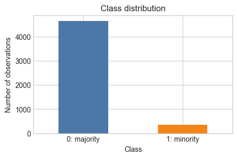
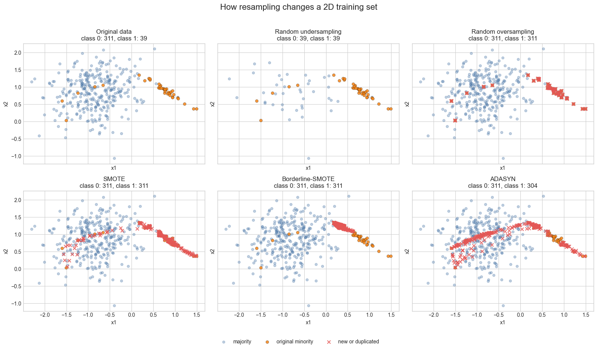
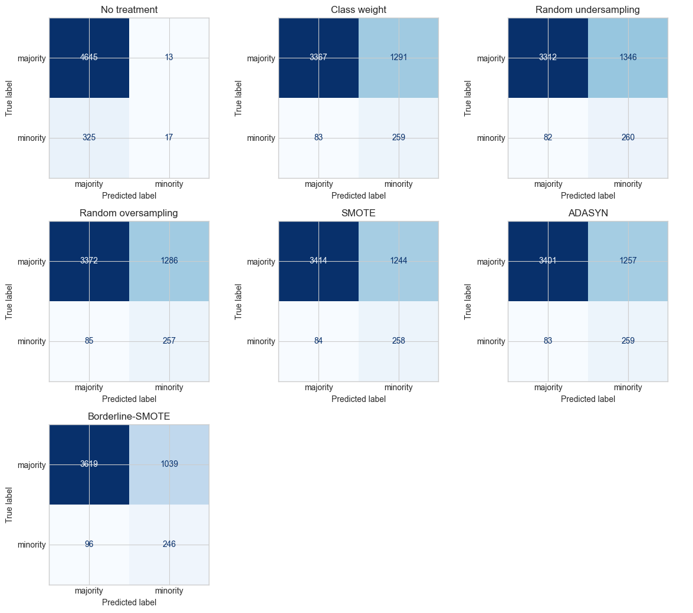
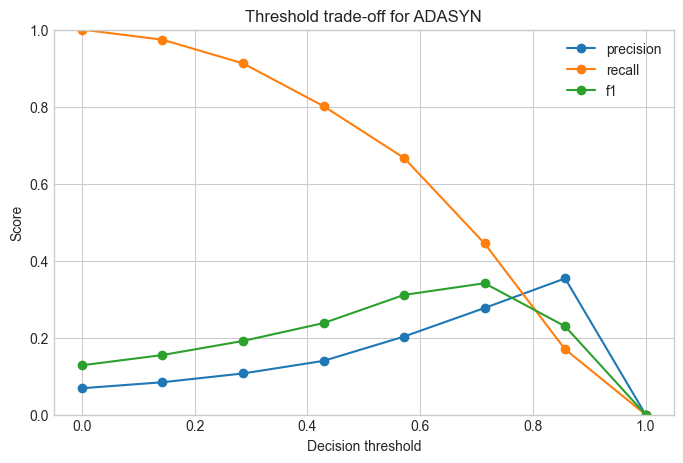

| count | rate | |
|---|---|---|
| high_risk | ||
| 0 | 4658 | 0.932 |
| 1 | 342 | 0.068 |
Data-Centric AI (Module II)
Data Augmentation, SMOTE, and Leakage-Safe Pipelines
Matteo Francia
DISI — University of Bologna
m.francia@unibo.it
DISI — University of Bologna
m.francia@unibo.it
Learning outcomes
By the end of this notebook, you should be able to:
- Build
sklearnpipelines and optimize their hyper-parameters. - Explain class imbalance and why accuracy can be misleading.
- Distinguish data augmentation from resampling.
- Compare random oversampling, undersampling, SMOTE, ADASYN, and class weighting.
- Place resampling correctly inside a cross-validation pipeline.
- Select appropriate metrics and decision thresholds.
1. Why pipelines matter
A machine-learning pipeline is rarely just a classifier. A real workflow often includes missing-value handling, scaling, categorical encoding, feature selection, resampling, and then the final estimator.
sklearn.pipeline.Pipeline packages these steps into one object with a single fit, predict, and predict_proba interface.
This matters because every preprocessing step must be learned only from the training data. A pipeline makes that discipline automatic during train/test splits and cross-validation.
2. A basic sklearn pipeline
A typical pipeline chains transformers and a final estimator:
from sklearn.pipeline import Pipeline
from sklearn.preprocessing import StandardScaler
from sklearn.linear_model import LogisticRegression
pipeline = Pipeline([
("scaler", StandardScaler()),
("classifier", LogisticRegression(max_iter=2000)),
])
pipeline.fit(X_train, y_train)
pipeline.predict(X_test)The important point is that StandardScaler is fitted on X_train only. The test set is transformed using the training-set scaling parameters.
3. Pipelines expose hyper-parameters
Pipeline parameters are addressed with the pattern:
For example, if the classifier step is named classifier, then the logistic-regression regularization strength is classifier__C.
param_grid = {
"classifier__C": [0.01, 0.1, 1, 10],
"classifier__class_weight": [None, "balanced"],
}This lets us tune preprocessing choices and model choices together, while keeping the evaluation leakage-safe.
4. Hyper-parameter optimization with cross-validation
GridSearchCV trains and evaluates many pipeline configurations using cross-validation. Each fold fits preprocessing and the classifier only on the training part of that fold.
from sklearn.model_selection import GridSearchCV, StratifiedKFold
cv = StratifiedKFold(n_splits=5, shuffle=True, random_state=42)
search = GridSearchCV(
estimator=pipeline,
param_grid=param_grid,
scoring="f1",
cv=cv,
)
search.fit(X_train, y_train)
search.best_params_For imbalanced classification, the scoring function should match the task. Accuracy is often the wrong objective; recall, F1, F-beta, average precision, or a custom cost function may be more appropriate.
5. Pipelines with resampling need imblearn
sklearn.pipeline.Pipeline is designed for transformers and estimators. Resamplers such as SMOTE change both X and y, so they need imblearn.pipeline.Pipeline.
from imblearn.pipeline import Pipeline as ImbPipeline
from imblearn.over_sampling import SMOTE
pipeline = ImbPipeline([
("preprocessing", preprocessor),
("sampler", SMOTE(random_state=42)),
("classifier", LogisticRegression(max_iter=2000)),
])The central rule of this lab follows from this: resampling is part of training, so it must happen inside the pipeline and inside each cross-validation fold.
6. The imbalanced classification problem
Many important binary classification problems have one class that is much rarer than the other: fraud detection, medical diagnosis, safety incidents, customer churn, credit default, and equipment failures.
We call the frequent class the majority class and the rare class the minority class. In this notebook the minority class is the positive class: 1.
When classes are imbalanced, accuracy can be misleading. If only 5% of customers churn, a classifier that always predicts “no churn” reaches 95% accuracy while finding no churners at all.
Useful metrics include:
- Precision: among predicted positives, how many were actually positive?
- Recall or sensitivity: among actual positives, how many did we find?
- Specificity: among actual negatives, how many did we correctly reject?
- F1 score: harmonic mean of precision and recall.
- Confusion matrix: counts of true negatives, false positives, false negatives, and true positives.
7. Methods for handling imbalance
Common strategies include:
- No treatment: train directly and evaluate carefully.
- Class weights: make minority-class errors more expensive.
- Undersampling: remove majority examples.
- Oversampling: duplicate minority examples.
- SMOTE and variants: synthesize minority examples.
Use this slide as the menu of interventions. The rest of the lab asks which intervention changes errors in the desired direction.
Data augmentation versus SMOTE
Data augmentation applies domain-specific label-preserving transformations: image rotations, sensor noise, audio crops, text perturbations, or simulated operating conditions.
SMOTE is narrower. It creates tabular rows by interpolation in feature space.
- The important question is whether the generated record could exist in the real data-generating process.
8. How SMOTE works
SMOTE creates new minority-class observations instead of duplicating existing ones (Chawla et al. 2002).
For a minority point x_i, it selects a nearby minority point x_j and creates:
The intuition is simple: fill sparse minority regions. The risk is also simple: interpolation may create impossible records.
Borderline-SMOTE
Borderline-SMOTE focuses on minority observations near the class boundary (Han et al. 2005).
These are the points a classifier is most likely to confuse with the majority class.
This can help boundary recall, but noisy or mislabeled boundary points can be reinforced.
SMOTE-NC
SMOTE-NC handles mixed numerical and categorical data (Chawla et al. 2002).
- Numerical columns are interpolated.
- Categorical columns are chosen from neighboring minority examples.
It avoids fractional one-hot categories, but it still cannot guarantee every generated category combination is realistic.
ADASYN
ADASYN estimates local difficulty from nearest neighbors (He et al. 2008).
- Minority observations surrounded by many majority observations receive larger sampling weights.
- The method shifts attention toward hard minority regions, which can be useful or risky depending on label noise and class overlap.
ADASYN creates more synthetic minority examples around locally difficult observations: minority points surrounded by many majority neighbors.
- This can improve recall in hard regions, but it can also amplify mislabeled points or outliers.
9. Leakage warning
Resampling is part of model training. It must be learned from the training data only.
- Do not apply SMOTE or oversampling before splitting the data. If synthetic points are created before a train/test split, information from validation or test observations can leak into the training set through nearest-neighbor interpolation or duplicated examples.
- The same rule applies to cross-validation: resampling must happen inside each training fold, not once globally before cross-validation.
- This is why we use
imblearn.pipeline.Pipelinewhenever the pipeline contains a sampler.
11. Create a deliberately imbalanced dataset
We will use a synthetic binary classification dataset so the notebook is reproducible without external data downloads.
Think of y=1 as a rare high-risk event, such as fraud, churn, default, or failure.
Start with the base rate. Every later metric should be interpreted relative to this imbalance.

12. Why accuracy fails?
Majority-class baseline
A classifier that always predicts the majority class can look strong by accuracy alone. But it has zero recall for the minority class.
| accuracy | precision | recall | f1 | |
|---|---|---|---|---|
| 0 | 0.932 | 0.0 | 0.0 | 0.0 |
13. Visual intuition
Before full pipelines, inspect resampling on a small 2D dataset.
The goal is not the best model. The goal is to see how the training set changes.
- Undersampling removes majority rows.
- Oversampling duplicates minority rows.
- SMOTE interpolates between minority neighbors.
- Borderline-SMOTE focuses near the class boundary.
- ADASYN focuses on locally difficult minority regions.
Code: Build a 2D imbalanced dataset

The plots show why these techniques are not interchangeable.
- Random oversampling increases the minority count by repeating existing observations, so the red crosses sit directly on top of known points.
- SMOTE fills segments between nearby minority points. This smooths sparse minority regions, but assumes that interpolation produces valid records.
- Borderline-SMOTE tries to synthesize near the frontier between classes. It is useful when boundary recall matters, but it can be sensitive to overlap and label noise.
- ADASYN places more synthetic examples in locally difficult regions. Compared with SMOTE, it often concentrates more strongly near areas where the majority class surrounds the minority class.
The visual lesson carries over to tabular data: synthetic rows are helpful only if the generated feature combinations are plausible for the domain.
14. Baseline pipeline
A conventional sklearn.pipeline.Pipeline is sufficient when all steps are transformers and estimators.
Code
# Standardize numeric features before logistic regression.
numeric_features = X.columns.tolist()
preprocessor = ColumnTransformer(
transformers=[("num", StandardScaler(), numeric_features)],
remainder="drop",
)
baseline_pipeline = Pipeline(
steps=[
("preprocessing", preprocessor),
("classifier", LogisticRegression(max_iter=2000, random_state=RANDOM_STATE)),
]
)
baseline_pipelinePipeline(steps=[('preprocessing',
ColumnTransformer(transformers=[('num', StandardScaler(),
['feature_00', 'feature_01',
'feature_02', 'feature_03',
'feature_04', 'feature_05',
'feature_06', 'feature_07',
'feature_08', 'feature_09',
'feature_10',
'feature_11'])])),
('classifier',
LogisticRegression(max_iter=2000, random_state=42))])In a Jupyter environment, please rerun this cell to show the HTML representation or trust the notebook. On GitHub, the HTML representation is unable to render, please try loading this page with nbviewer.org.
Parameters
Parameters
['feature_00', 'feature_01', 'feature_02', 'feature_03', 'feature_04', 'feature_05', 'feature_06', 'feature_07', 'feature_08', 'feature_09', 'feature_10', 'feature_11']
Parameters
Parameters
15. Candidate pipelines
We compare seven strategies (When we add a sampler such as SMOTE, random oversampling, or undersampling, we switch to imblearn.pipeline.Pipeline):
- No imbalance treatment (baseline pipeline).
class_weight="balanced".- Random undersampling.
- Random oversampling.
- SMOTE.
- ADASYN.
- Borderline-SMOTE.
All samplers are placed after preprocessing and before the classifier, so they are fitted only on the current training fold.
pipelines = {
"No treatment": Pipeline(
[("preprocessing", preprocessor), ("classifier", logistic_regression())]
),
"Class weight": Pipeline(
[("preprocessing", preprocessor), ("classifier", logistic_regression(class_weight="balanced"))]
),
"Random undersampling": ImbPipeline(
[("preprocessing", preprocessor), ("sampler", RandomUnderSampler(random_state=RANDOM_STATE)), ("classifier", logistic_regression())]
), # ...
}16. Stratified cross-validation
Loops over stratified folds. This makes it explicit that every pipeline is cloned, fitted on the training fold, and evaluated on the untouched validation fold.
| method | ADASYN | Borderline-SMOTE | Class weight | No treatment | Random oversampling | Random undersampling | SMOTE |
|---|---|---|---|---|---|---|---|
| fold | |||||||
| 1 | 0.258 | 0.287 | 0.247 | 0.080 | 0.245 | 0.257 | 0.253 |
| 2 | 0.272 | 0.296 | 0.259 | 0.135 | 0.259 | 0.249 | 0.268 |
| 3 | 0.285 | 0.295 | 0.280 | 0.028 | 0.281 | 0.275 | 0.285 |
| 4 | 0.278 | 0.307 | 0.285 | 0.107 | 0.280 | 0.266 | 0.290 |
| 5 | 0.305 | 0.330 | 0.302 | 0.104 | 0.303 | 0.292 | 0.308 |
17. Comparison table
The table reports mean cross-validation performance and fold-to-fold variability.
- Precision: among predicted positives, how many were actually positive?
- Recall or sensitivity: among actual positives, how many did we find?
- Specificity: among actual negatives, how many did we correctly reject?
- F1 score: harmonic mean of precision and recall.
| Accuracy | Precision | Recall | Specificity | F1 | F1_std | |
|---|---|---|---|---|---|---|
| method | ||||||
| Borderline-SMOTE | 0.773 | 0.192 | 0.719 | 0.777 | 0.303 | 0.017 |
| SMOTE | 0.734 | 0.172 | 0.754 | 0.733 | 0.281 | 0.021 |
| ADASYN | 0.732 | 0.172 | 0.757 | 0.730 | 0.279 | 0.017 |
| Class weight | 0.725 | 0.168 | 0.757 | 0.723 | 0.275 | 0.022 |
| Random oversampling | 0.726 | 0.167 | 0.751 | 0.724 | 0.274 | 0.022 |
| Random undersampling | 0.714 | 0.163 | 0.760 | 0.711 | 0.268 | 0.017 |
| No treatment | 0.932 | 0.552 | 0.050 | 0.997 | 0.091 | 0.040 |
18. Confusion matrices
Here we use out-of-fold predictions. Each observation is predicted by a model that did not train on it.

19. Precision-recall curves
The precision-recall curve shows the tradeoff between precision and recall (high precision -> low false positive rate, high recall -> low false negative rate)
- A system with high recall but low precision returns many results, but most of its predicted labels are incorrect.
- A system with high precision but low recall is just the opposite, returning very few results, but most of its predicted labels are correct
Precision (\(P=\frac{TP}{TP + FP}\)) may not decrease with recall (\(R=\frac{TP}{TP + FN}\))
- Lowering the threshold of a classifier may increase the denominator, by increasing the number of results returned.
- If the threshold was previously set too high, the new results may all be true positives, which will increase precision.
- If the previous threshold was about right or too low, further lowering the threshold will introduce FP, decreasing precision.
Recall does not depend on the classifier threshold.
- Lowering the classifier threshold may increase recall, by increasing the number of true positive results, but it is also possible that lowering the threshold may leave recall unchanged, while the precision fluctuates.

Precision-recall curves
A precision-recall curve shows how precision and recall change as we vary the classification threshold for binary classification.
- Most probabilistic classifiers first produce a positive-class score, then convert it into a label with a threshold.
- Lower thresholds predict more positives: recall usually rises and precision often falls.
- Higher thresholds predict fewer positives: precision may rise and recall often falls.
- The horizontal baseline is the positive-class rate.
Average precision (\(AP=\sum_n (R_n - R_{n-1}) P_n\)) summarizes such a plot as the weighted mean of precisions achieved at each threshold

20. Threshold adjustment
predict usually applies a threshold of 0.5. That threshold is not sacred: it is a decision rule, not a property of the model.
- A lower threshold produces more positive predictions. This usually reduces FN and increases recall, but it can increase FP and lower precision.
- A higher threshold produces fewer positive predictions. This can reduce FP and improve precision, but it can increase FN and lower recall.
In a high-cost false-negative scenario, such as fraud detection, medical screening, safety monitoring, or loan-default risk, we may prefer a lower threshold.
- The model will raise more alarms, but it misses fewer rare positive cases.
The right threshold depends on the operational cost of each error type.
- Threshold tuning should be evaluated with validation data, business constraints, and the metric that matches the real decision problem.
| threshold | precision | recall | specificity | f1 | |
|---|---|---|---|---|---|
| 0 | 0.000 | 0.068 | 1.000 | 0.000 | 0.128 |
| 1 | 0.143 | 0.084 | 0.974 | 0.221 | 0.155 |
| 2 | 0.286 | 0.107 | 0.912 | 0.440 | 0.191 |
| 3 | 0.429 | 0.140 | 0.801 | 0.637 | 0.238 |
| 4 | 0.571 | 0.203 | 0.667 | 0.807 | 0.311 |
| 5 | 0.714 | 0.277 | 0.444 | 0.915 | 0.341 |
| 6 | 0.857 | 0.354 | 0.170 | 0.977 | 0.229 |
| 7 | 1.000 | 0.000 | 0.000 | 1.000 | 0.000 |
Code: Plot the threshold trade-off
The plot makes the precision-recall trade-off easier to discuss than the table alone.

21. Choose a threshold for high-cost false negatives
Suppose a false negative costs 10 times as much as a false positive.
This is a simple teaching cost model, not a universal decision rule. In a real application, you would estimate costs with domain experts and validate the downstream effects.
| threshold | false_positives | false_negatives | total_cost | precision | recall | f1 | method | |
|---|---|---|---|---|---|---|---|---|
| 593 | 0.52 | 961 | 101 | 1971 | 0.200 | 0.705 | 0.312 | Borderline-SMOTE |
| 505 | 0.55 | 993 | 101 | 2003 | 0.195 | 0.705 | 0.306 | ADASYN |
| 328 | 0.60 | 795 | 123 | 2025 | 0.216 | 0.640 | 0.323 | Random oversampling |
| 231 | 0.54 | 1126 | 90 | 2026 | 0.183 | 0.737 | 0.293 | Random undersampling |
| 140 | 0.54 | 1068 | 96 | 2028 | 0.187 | 0.719 | 0.297 | Class weight |
| 415 | 0.56 | 959 | 107 | 2029 | 0.197 | 0.687 | 0.306 | SMOTE |
| 6 | 0.11 | 694 | 143 | 2124 | 0.223 | 0.582 | 0.322 | No treatment |
22. Leakage demonstration
The following example shows the wrong and right structure.
- The wrong structure applies SMOTE before cross-validation. The validation folds are no longer clean because the synthetic data was produced using information from the full dataset.
- The right structure places SMOTE inside an
imblearnpipeline, so SMOTE is fitted only on each training fold.
| accuracy | precision | recall | specificity | f1 | |
|---|---|---|---|---|---|
| method | |||||
| Leaky SMOTE before CV | 0.758 | 0.746 | 0.782 | 0.733 | 0.763 |
| SMOTE inside CV | 0.734 | 0.172 | 0.754 | 0.733 | 0.281 |
23. SMOTE-NC for mixed tabular data
SMOTENC is useful when predictors mix numerical and categorical columns.
- The categorical feature indices must refer to the matrix seen by the sampler, so preprocessing order matters.
- A common design is to apply
SMOTENCbefore one-hot encoding, or to use preprocessing that keeps categorical columns identifiable at the sampler step. - Be careful with plain SMOTE after one-hot encoding: interpolation can produce fractional category indicators.
24. Student challenge
Choose a pipeline for a high-cost false-negative scenario.
- Define the cost of a false negative.
- Select a primary metric.
- Compare at least three imbalance strategies.
- Tune the classification threshold.
- Defend the final choice with evidence.
Challenge datasets
- Credit Card Fraud Detection on Kaggle.
References
Chawla, Nitesh V., Kevin W. Bowyer, Lawrence O. Hall, and W. Philip Kegelmeyer. 2002. “SMOTE: Synthetic Minority over-Sampling Technique.” Journal of Artificial Intelligence Research 16: 321–57. https://doi.org/10.1613/jair.953.
Han, Hui, Wen-Yuan Wang, and Bing-Huan Mao. 2005. “Borderline-SMOTE: A New over-Sampling Method in Imbalanced Data Sets Learning.” Advances in Intelligent Computing, Lecture notes in computer science, vol. 3644: 878–87. https://doi.org/10.1007/11538059_91.
He, Haibo, Yang Bai, Edwardo A. Garcia, and Shutao Li. 2008. “ADASYN: Adaptive Synthetic Sampling Approach for Imbalanced Learning.” 2008 IEEE International Joint Conference on Neural Networks, 1322–28. https://doi.org/10.1109/IJCNN.2008.4633969.